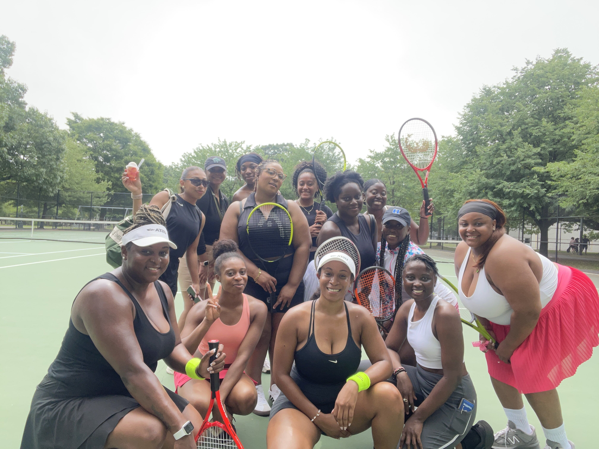

Empowering Women Through Tennis

"A champion is defined not by their wins but by how they can recover when they fall."
-Serena Williams


About MSC
Metro Sisters Circle is a Tennis Community dedicated to creating an inclusive space for women and making the sport accessible for the Queens community. It was founded by two sisters and their best friend, Essence, Shaniece & Angelique.